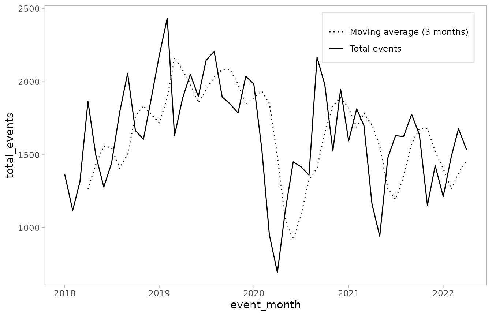
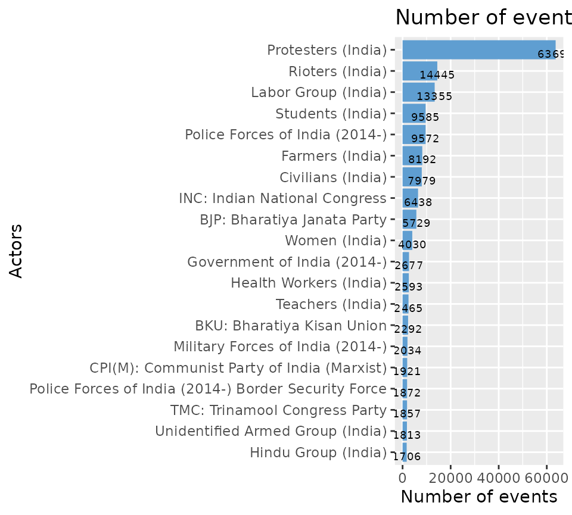

Exploratory Data Analysis with acledR
Source:vignettes/articles/acled_analysis.Rmd
acled_analysis.RmdThe data analysis family of functions can assist you in carrying exploratory data analysis of ACLED data. Our team has engineered this suite of functions, not only to meet the specific user cases, but also to encapsulate and streamline the initial data analyses crucial for performing larger, more complex analytic tasks.
These functions attempt to speed-up your exploratory data analysis, however, you are highly encouraged to get familiar with our documentation to properly interpret the results from these functions.
At this time, acledR offers three functions aimed at
exploratory data analysis:
acled_generate_counts()- Event/fatalities countsacled_generate_movers()- Moving statistics of event countsacled_actor_concentration- Actor concentration
Generating counts of ACLED events -
acled_generate_counts()
The acled_generate_counts() function creates event
counts by event type, spacial and temporal units of analysis.
The required arguments are:
acled_generate_counts(
data,
unit_id,
time_id,
time_target,
event_type = NULL
)Arguments: - data is ACLED event-level data (e.g,
ACLED’s dyadic dataframe), - unit_id is the spatial unit of
analysis (e.g., country, admin1, region), -
time_id is the temporal unit (i.e.,
event_date),
- time_target is the temporal unit of aggregation (e.g.,
week, month, year), and - event_type - Used in case of
wanting to filter events for event_types
Note: ACLED’s data collection does not follow a
Monday-Sunday week, but instead a Saturday-Friday week. This function
follows the same approach. Thus, if time_target = week,
ACLED’s week (starting on Saturday) is utilized.
Time in acled_generate_counts
acled_generate_counts was created so that users could
get event counts across different spatial and temporal units in a simple
manner. When it comes to temporal units, you can utilize three options:
- year (e.g.time_id="year") - month
(e.g. time_id = "month") - week
(e.g. time_id = "day")
You can generate event counts at the country-week level:
df_sa_agg_weekly <-acled_generate_counts(df_sa,
unit_id = "country",
time_id = "event_date",
time_target = "week")This returns a tibble with columns for each event type in the data, as well as a column for the total events:
| country | event_week | protests | riots | strategic_developments | violence_against_civilians | battles | explosions_remote_violence | total_events |
|---|---|---|---|---|---|---|---|---|
| Argentina | 2022-01-01 | 21 | 3 | 0 | 0 | 0 | 0 | 24 |
| Argentina | 2022-01-08 | 19 | 2 | 0 | 0 | 0 | 0 | 21 |
| Argentina | 2022-01-15 | 43 | 6 | 1 | 0 | 0 | 0 | 50 |
| Argentina | 2022-01-22 | 27 | 5 | 0 | 0 | 0 | 0 | 32 |
| Argentina | 2022-01-29 | 30 | 2 | 0 | 1 | 0 | 0 | 33 |
| Argentina | 2022-02-05 | 33 | 2 | 0 | 0 | 0 | 0 | 35 |
You can also limit the request to certain event_types. For example, you might only want “Protests” and “Riots” events:
df_sa_agg_weekly_pv <-
df_sa %>%
acled_generate_counts(., unit_id = "country",
time_id = "event_date",
time_target = "week",
event_type = c('Protests', 'Riots')) Now the object only retains the requested event type and the total (in the new total_events column) corresponds to these types only:
| country | event_week | protests | riots | strategic_developments | violence_against_civilians | battles | explosions_remote_violence | total_events |
|---|---|---|---|---|---|---|---|---|
| Argentina | 2022-01-01 | 21 | 3 | 0 | 0 | 0 | 0 | 24 |
| Argentina | 2022-01-08 | 19 | 2 | 0 | 0 | 0 | 0 | 21 |
| Argentina | 2022-01-15 | 43 | 6 | 1 | 0 | 0 | 0 | 50 |
| Argentina | 2022-01-22 | 27 | 5 | 0 | 0 | 0 | 0 | 32 |
| Argentina | 2022-01-29 | 30 | 2 | 0 | 1 | 0 | 0 | 33 |
| Argentina | 2022-02-05 | 33 | 2 | 0 | 0 | 0 | 0 | 35 |
If instead, you wanted “Riots” counts by month rather than week, we
would simply swap time_target = week to
time_target = month:
df_sa_agg_monthly_riots <-
df_sa %>%
acled_generate_counts(., unit_id = "country",
time_id = "event_date",
time_target = "month",
event_type = "Riots")Generate moving statistics - generate_movers
While acled_generate_counts() generates event counts,
acled_generate_movers() generates moving
statistics of ACLED event counts - i.e. the results of
acled_generate_counts(). Moving statistics summarize the
variation in event counts over a designated period of time. A common
example would be a moving average, which would
represent the average number of events over a specified period of time
until most present observation.
The required parameters are as follows:
acled_generate_movers(
data,
var,
unit_id,
time_id,
slide_funs,
slide_periods
)datais event count data from ACLED, i.e. the result ofacled_generate_counts,unit_idis the spatial unit of analysis (e.g., country, admin1, region),time_idis the temporal unit (e.g., week, month, year),slide_funsare the requested moving statistics (e.g., mean, sd, median, min, max),slide_periodsare the number of temporal units over which to calculate the moving statistics.
Notes: The unit_id and
time_id must be existing columns in your event count
dataframe.
Example - acled_generate_counts() &
acled_generate_movers()
As an initial example, imagine you wanted to explore the data from “India” since 2018.
First, pull ACLED data for “India” since 2018 using the
acled_api() function:
library(acledR)
acled_access(email = "acledexamples@gmail.com", key = "M3PWwg3DIdhHMuDiilp5") # This is an example, you will need to input your credentials.
df_india <- acled_api(countries = "India",
start_date = "2018-01-01",
end_date = "2022-04-30",
monadic = F,
prompt=F,
acled_access = T)Next, aggregate to event counts per month using the
acled_generate_counts() function:
df_india_agg <-
df_india %>%
acled_generate_counts(.,
unit_id = "country",
time_id = "event_date",
time_target = "month")You now have a tibble of ACLED event counts by month for each event type, as well the sum across event types:
df_india_agg %>%
dplyr::glimpse()
#> Rows: 52
#> Columns: 9
#> $ country <chr> "India", "India", "India", "India", "India"…
#> $ event_month <date> 2018-01-01, 2018-02-01, 2018-03-01, 2018-0…
#> $ battles <dbl> 133, 142, 87, 76, 131, 84, 81, 88, 72, 77, …
#> $ explosions_remote_violence <dbl> 45, 23, 19, 27, 39, 36, 29, 25, 14, 23, 26,…
#> $ protests <dbl> 952, 752, 934, 1325, 1003, 886, 1035, 1257,…
#> $ riots <dbl> 167, 133, 202, 358, 215, 189, 206, 272, 411…
#> $ strategic_developments <dbl> 20, 15, 9, 15, 25, 18, 27, 30, 26, 21, 20, …
#> $ violence_against_civilians <dbl> 50, 54, 64, 64, 86, 66, 64, 116, 111, 106, …
#> $ total_events <dbl> 1367, 1119, 1315, 1865, 1499, 1279, 1442, 1…With these event counts, you can use
acled_generate_movers() to calculate moving statistics out
of your total counts. Next, create a new object for the moving
average of total_events over the last 3
months:
df_india_agg_movers <-
acled_generate_movers(data = df_india_agg,
var = "total_events",
unit_id = "country",
time_id = "event_month",
slide_funs = "mean",
slide_periods = 3)You now have a new column for the requested moving
average: total_events_moving_mean_3. Take a look
at the first few rows of our new tibble:
df_india_agg_movers %>%
dplyr::select(country,
event_month,
total_events,
total_events_moving_mean_3)
#> # A tibble: 52 × 4
#> # Groups: country [1]
#> country event_month total_events total_events_moving_mean_3
#> <chr> <date> <dbl> <dbl>
#> 1 India 2018-01-01 1367 NA
#> 2 India 2018-02-01 1119 NA
#> 3 India 2018-03-01 1315 NA
#> 4 India 2018-04-01 1865 1267
#> 5 India 2018-05-01 1499 1433
#> 6 India 2018-06-01 1279 1560.
#> 7 India 2018-07-01 1442 1548.
#> 8 India 2018-08-01 1788 1407.
#> 9 India 2018-09-01 2058 1503
#> 10 India 2018-10-01 1665 1763.
#> # ℹ 42 more rowsNote that the first 3 months for
total_events_moving_mean_3 are missing. This is because
there has not been enough elapsed time in the sample to calculate a
complete moving statistic of the requested temporal length (in our case,
3 months). This default behavior can be turned off by setting
complete = F in the acled_generate_movers()
function.
To see how this would change the returned values, try the following:
acled_generate_movers(data = df_india_agg,
var = "total_events",
unit_id = "country",
time_id = "event_month",
slide_funs = "mean",
slide_periods = 3,
complete = F) %>%
dplyr::select(country, event_month, total_events,
total_events_moving_mean_3)
#> # A tibble: 52 × 4
#> # Groups: country [1]
#> country event_month total_events total_events_moving_mean_3
#> <chr> <date> <dbl> <dbl>
#> 1 India 2018-01-01 1367 NaN
#> 2 India 2018-02-01 1119 1367
#> 3 India 2018-03-01 1315 1243
#> 4 India 2018-04-01 1865 1267
#> 5 India 2018-05-01 1499 1433
#> 6 India 2018-06-01 1279 1560.
#> 7 India 2018-07-01 1442 1548.
#> 8 India 2018-08-01 1788 1407.
#> 9 India 2018-09-01 2058 1503
#> 10 India 2018-10-01 1665 1763.
#> # ℹ 42 more rowsHere, the first period returns NaN values, while the
second period simply fills the first observed value. By the fourth
period, the moving averages for the default complete = T
and complete = F versions are the same, as both are
calculated moving statistics over a 3 month period.
Sticking with the default complete = T version, we can
quickly visualize the trend in event counts over time with
ggplot2:
library(ggplot2)
df_india_agg_movers %>%
ggplot() +
geom_line(aes(x = event_month, y = total_events,
linetype = "Total events")) +
geom_line(aes(x = event_month, y = total_events_moving_mean_3,
linetype = "Moving average (3 months)")) +
scale_linetype_manual(values = c(3, 1),
guide = guide_legend(title = NULL)) +
theme_light() +
theme(legend.position = c(0.8, 0.885),
legend.background = element_rect(color = "gray90"),
panel.grid = element_blank())
Finding actor concentration -
acled_actor_concentration()
The acled_actor_concentration() functions extracts the
degree of actor concentration in a given data set. Concentration, in
statistical terms, refers to the degree by which a measure (in our case,
number of events) is dominated by a few entities within a dataset or
population. To calculate actor concentration,
acled_actor_concentration() can utilize two approaches:
Inverse Simpson Index or Herfindahl-Hirschman
Index. Both approaches take different routes to calculate and
express these concentration, but both are equally valuable for
analysis.
acled_actor_concentration() is set-up as follows:
acled_actor_concentration(events,
method = "Effective actors",
acled_dataframe = T)Arguments: - events is an ACLED dyadic dataframe
(i.e. the result from an acled_api() call) or a vector of
event/fatalities counts per actor. The required object type of events
depends on acled_dataframe. - If
acled_dataframe = T then the function expects ACLED’s
dyadic dataframe (default behavior), otherwise if
acled_dataframe = F it expects a vector of event/fatalities
counts per actor
methodis the desired methodological approach to calculate concentration indices, either Inverse Simpson Index or Hertindahl-Hirscham Index. These are described below:method="Effective actors": Utilizes the Inverse Simpson Index (also known as the Reciprocal Simpson Index) to calculate the number of effective actors by measuring how evenly events/fatalities are distributed across actors. Take a vector where the total number of events across all actors is \(N\), and the total counts of each actor is \(z_1\), then the number of effective actors (\(D\)) is \[ D=1-(∑z_i(z_i−1))/N(N-1) \] The minimum is 1 (least diverse), and the maximum is the total number of actors (perfectly diverse).method="Concentration": Utilizes the Herfindahl-Hirschman Index to estimate the concentration of actors in a given data set. In a data set where the presence of a given actor is understood as \(MS\), and the actor is understood as \(i\). The concentration is the sum of the presence (MS) of each given actor (i) elevated by 2, or \[HHI=MS^2_1+MS^2_2+MS^2_3+MS^2_4+...+MS^2_i\]. Because we utilize the presence of a given actors represented in decimals rather than whole numbers (cf. US DOJ’s Horizontal Merger Guidelines (08/19/2019)) Results range from 0 to 1, where 1 represents a monopoly of a given actor in the environment, and 0.1 represents as a very competitively diverse environment.
Users can utilize these metrics to better understand the distribution and dominance of actors within a data set. In greater terms, the two metrics provide the same information, however, how the output is represented differently. In the Inverse Simpson Index we get the results in a scale from 1 to the nominal maximum number of actors, hence, it directly tells us how many effective actors we have in the dataset. The Herfindahl-Hirschmanns Index, shows us the level of concentration in the dataset in a scale from 0 to 1, where the closer we get to 1, the less diverse the dataset becomes, and the closer to 0, the more diverse it becomes. They both provide measures of diversity and concentration, expressed in different terms.
Example - acled_actor_concentration()
In this example, you will aim to better understand the concentration of actors in the indian dataset we explored in the example above.
df_india %>%
head(3)
#> # A tibble: 3 × 31
#> event_id_cnty event_date year time_precision disorder_type event_type
#> <chr> <date> <dbl> <dbl> <chr> <chr>
#> 1 IND110253 2022-04-30 2022 1 Demonstrations Protests
#> 2 IND110277 2022-04-30 2022 1 Demonstrations Protests
#> 3 IND110385 2022-04-30 2022 1 Demonstrations Protests
#> # ℹ 25 more variables: sub_event_type <chr>, actor1 <chr>, assoc_actor_1 <chr>,
#> # inter1 <dbl>, actor2 <chr>, assoc_actor_2 <chr>, inter2 <dbl>,
#> # interaction <dbl>, civilian_targeting <chr>, iso <dbl>, region <chr>,
#> # country <chr>, admin1 <chr>, admin2 <chr>, admin3 <chr>, location <chr>,
#> # latitude <dbl>, longitude <dbl>, geo_precision <dbl>, source <chr>,
#> # source_scale <chr>, notes <chr>, fatalities <dbl>, tags <chr>,
#> # timestamp <dbl>Because your dataset is ACLED’s dyadic dataframe, you can directly
feed it into our acled_actor_concentration() function. In
this case, method='Effective actors', so you can explore
how the Inverse Simpson Index is represented.
isi_df_india <- acled_actor_concentration(df_india, method = "Effective actors")
print(isi_df_india)
#> eff_actors actors avg_events
#> 1 9.335433 1678 127.767The result from the function is a new dataframe with three columns, eff_actors, actors, and avg_events. Interestingly, while there are 1679 actors, there are only 9.33 effective actors. We can manually calculate the distribution of events across actors to better ilustrate this.
long_form_df_india <- df_india %>%
acled_transform() %>%
group_by(actor) %>%
summarise(events = n()) %>%
filter(!is.na(actor)) %>%
dplyr::arrange(-events) %>%
head(20)
ggplot(long_form_df_india, aes(x = events, y = stats::reorder(actor, events))) +
geom_bar(stat="identity", fill = "#5F9ED1") +
geom_text(aes(label=events), vjust=1, size=2.5, color = "black")+
labs(y = "Actors",
x = "Number of events",
title = "Number of events by actor")
As we can observe, our dataset is indeed dominated by a couple of actors. From “Protesters (India)” to “Women (India)”, there is a fairly heavy distribution.
Now, run the same function but changing the method to
method="Concentration".
hhi_df_india <- acled_actor_concentration(df_india, method = "Concentration")
print(hhi_df_india)
#> concentration actors avg_events
#> 1 0.1071188 1678 127.767When using the Herfindahl-Hirschmanns Index, we can see that while we only have 9.61 effective actors, out of 1678, the dataset is still fairly diverse. That is because of the number of actors we have, and the number of events these actors have show that there is a fairly diverse number of actors in the dataset. This may sound contradicting when considering the number of effective actors, but this method heavily rewards actors with at least 1 event.
To illustrate the difference, take the following example:
df <- data.frame(actors=c("actor1", "actor2", "actor3"),
events=c(8,1,1))
print(acled_actor_concentration(df$events, method = "Concentration", acled_dataframe = F)$concentration)
#> [1] 0.66
print(acled_actor_concentration(df$events, method = "Effective actors", acled_dataframe = F)$eff_actors)
#> [1] 1.515152To the eye, df is nothing but a heavily concentrated
dataset, with 80% of events controlled by actor1, yet the concentration
is only 0.66. Where as the Inversed Simpson Index shows
us that there is only 1.5 effective actors.
The divergency surrounds what each method rewards more. The HHI focuses on how “wide” the distribution is (how many actors are present), where the ISI focuses on how “tall” the distribution is (how many events per actors there is). Often times you will require both to get a more comprehensive picture of the structure of the dataset.